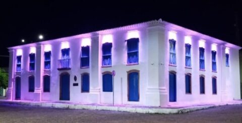

Cultura de Oeiras (PI)
Oeiras, primeira capital do Piauí, preserva uma rica herança cultural que reflete sua história colonial, religiosidade e tradições populares. A cidade é marcada por festas tradicionais, patrimônios históricos, artesanato, música, dança e uma gastronomia típica, que juntos formam um retrato vivo da identidade e da memória do povo oeirense.

- Festa do Rosário – Celebração religiosa com procissões, missas e manifestações afro-brasileiras, em homenagem à Nossa Senhora do Rosário.
- Semana Santa de Oeiras – Tradição religiosa com encenações da Paixão de Cristo e ritos especiais na Igreja Matriz.
Festas e Tradições Populares

- Igrejas coloniais (Igreja Matriz, Igreja do Rosário, Igreja da Conceição).
- Casas históricas (Casa das Doze Janelas, Casa da Pólvora).
- Monumentos e praças históricas, como o Monumento a Nossa Senhora da Vitória.
Patrimônios Históricos e Arquitetônicos

- Trabalhos manuais típicos da região, como peças em cerâmica, renda e bordados.
- Lendas, mitos e histórias locais transmitidas oralmente.
Artesanato e Folclore

- Pratos típicos do Piauí e de Oeiras, como o arroz de cuxá, paçoca de pilão, carne de sol, e doces regionais.
- Festas gastronômicas ou eventos culinários locais.
Gastronomia Regional

- Ritmos tradicionais e expressões culturais, como o bumba-meu-boi, o repente e a música nordestina.
- Apresentações culturais e grupos locais de dança e música.
Música e Dança

- Museus históricos que preservam a memória da cidade.
- Centros culturais que promovem eventos, exposições e oficinas artísticas.